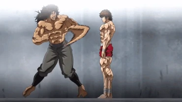
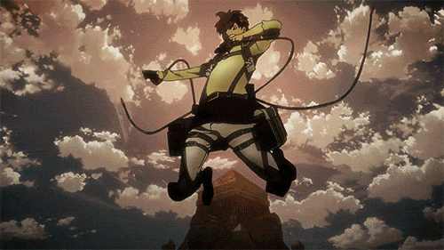
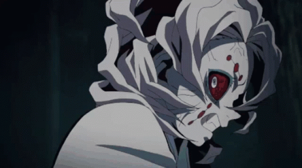

Some shows are just that good.
As a newer fan of anime, I may not inclulde some of your personal favorite shows. But from what I have seen, these are the ones that stuck out. Subscribe below to stay updated on this page and my awesome list of shows.

My Top Four (in no particular order)
Baki
Baki earns its spot for all of its incredible fight scenes. This show is NONSTOP ACTION.
Attack on Titan
Attack on Titan had me hooked from the start. The story draws you in so quickly, and you never want to stop.
Jujutsu Kaisen

After a slow start, it was the curses, especially Sukuna, for me that drew me in. Once this show gets good, it gets oh so good.
Demon Slayer
The fight scenes are absolutely incredible. The artwork combined with interesting, unique enemies like Rui make for an incredible series.
“I don't know which option you should choose and I could never advise you on that… No matter what kind of wisdom dictates you the option you pick, no one will be able to tell if it's right or wrong until you arrive to some sort of outcome from your choice.”
Stay updated! Click the button!
You won't actually stay updated, the button currently has no functionality.